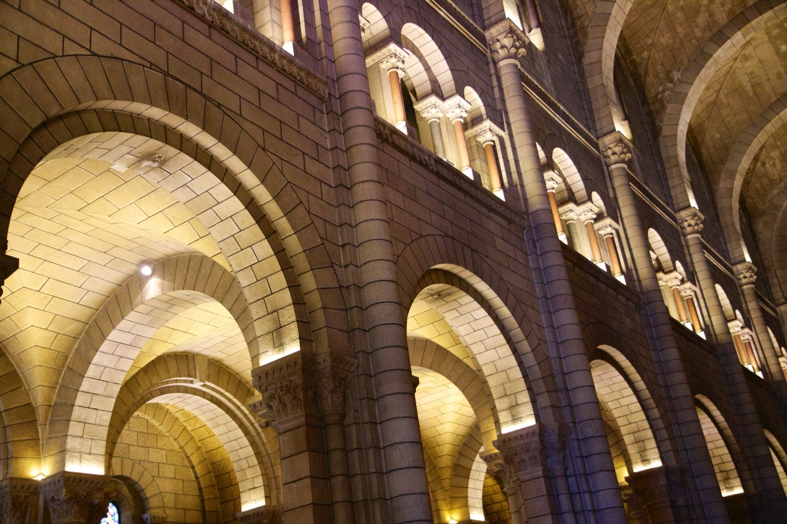
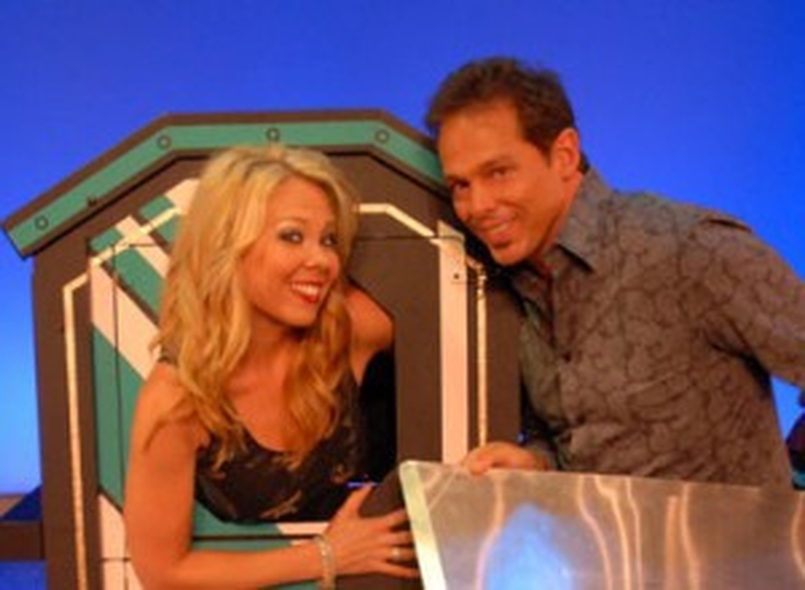

Mark Elster
Historic Reflections 3-3
The Itinerary, day 3 part 3
The small and very dense town drapes over a steep escarpment completely encrusted with homes, shops, pied-à-terres, streets and public spaces. Since traffic is jammed, walking turns out to be the best means of getting around even if we'd preferred otherwise—but what a workout. At one point during our ascent we were startled to overlook the back side of a five story apartment down a chasm only twenty feet wide!
Monaco and Monte Carlo

Aside from the copious sights along the way, our destination is the famed Place du Casino and Hôtel de Paris Monte-Carlo. Built by Prince Charles III and designed by Gobineau de la Brétonnerie in 1862 as part of the scheme to fill the coffers of the principality by draining the purses of Europe's wealthy gamblers.


The edifice is small by Las Vegas standards but similarly constructed of mostly inexpensive materials contrived to create an opulent and theatrical impression—in this case in a baroque or rococo style, veritably dripping with decoration and detail in cement plaster, terra cotta, paint, copper and splashes of stone work—a pleasant assault on the senses!



After tracing more of the winding streets of the historic ward we sauntered our way across the speedway and, quite literally, onto the Grand Prix track as our foot path into the Monte Carlo Quarter! (Watching out for speeding motorcycles). Passing the enormous grandstands (visible in the panorama below) we could almost hear the roar of the crowds and the whine of the engines that would be screaming through these streets in 5 days!
At the casino entry valets strategically stage the most outrageously expensive, exotic and racy cars of wealthy patrons on display for gawking tourists. Christoff is a little horrified to observe that the fancy coaches attract hordes of young boys and no sexy desirable girls at all (he's begun to rethink his recent Audi A6 purchase—it may not produce the effect on potential dates he intended!).
The Casino includes the usual assortment of ultra–high priced shops, one of which featured a curious display of scrolled bits of copper ribbon that spells out a pithy quote in flowery script via a cast shadow—quite startling!
The Casino includes the usual assortment of ultra–high priced shops, one of which featured a curious display of scrolled bits of copper ribbon that spells out a pithy quote in flowery script via a cast shadow—quite startling!
Already, the enormous mega–yachts of the world's jet–setting super wealthy were lined up awaiting the spectacle and their occupants (who travel separately from their floating palaces). It wouldn't be a surprise that some have one yacht at Cannes and another here.


After a short visit inside (no photos allowed) we were exhausted and due back aboard the last skiff to our boat so we had to hoof it (literally Nance's and my feet felt like hooves) leaving no time to see the Opéra de Monte-Carlo across the plaza, also known as the Salle Garnier (after the architect who also designed the famed Paris Opera) which was even more over–the–top rococo.


After a quick dash to hop aboard the ship's last tender of the day we were back relaxing before a pleasant dinner on deck with a panoramic view of the incredible cityscape and shoreline that got even more breathlessly beautiful as night fell.

Crossing back underground into an enormous subterranean parking cavern filled with tourist buses, we reentered in the base of a strange mall and museum–exhibit teaser (for the real museums above) and into two elevators and several flights of escalators to finally levitate ourselves to the surface. Coursing through the tidy streets past the colorful buildings, mindful of our limited time, we decided to skip the inside of the fancifully decorated oceanography museum and head straight to the cathedral.



To top off an incredible day we ambled aft to the Riviera Lounge for a Magic Evening of Fun & Laughter with Fred & Bobbie Becker. What a surprise to find our friends on board again (we first met them on our cruise to Alaska). Before the show we managed to find them to catch up and promised to meet later in the cruise. Needless to say their show was a delight and quite magical!
While the Cathedral is modest in size, befitting such a tiny country, and quite beautiful, NancyEllen was particularly interested to see where Princess Grace, and Prince Rainier were laid to rest. We were all fascinated to find her stone in the floor festooned with flowers, notes and other offerings—while his was barren—confirming Michele's account of how beloved the American princess Grace was, in contrast to the native–son prince Rainier's well–earned legacy as a cad and a familial tyrant. He was probably jealous of the adoration showered on his American princess, which likely contributed to his malevolent treatment of her. Apparently he took after his forebear Francesco Grimaldi (translated from the Italian: The malicious one).
After an already full day of touring we elected to tour, on our own, for another four exhausting hours, crossing nearly the full width of the principality of Monaco 1¾ times! This was the hardest day on our bodies (especially the feet) of the whole trip.
Having cribbed touring notes from Michele before leaving the Cotê de Azure tour, we proceeded on foot across one of the many zooming mini–highways honeycombing the bedrock through and under the whole town of (what I pictured as) mole–people, and into an obscure foot–tunnel that disgorges on the coastal causeway in the old Monaco district (the Monaco Ville Quarter or ward) at the base of the imposing palace citadel, but still 5–stories beneath the main street of the town–proper on the cliffs above.
Having cribbed touring notes from Michele before leaving the Cotê de Azure tour, we proceeded on foot across one of the many zooming mini–highways honeycombing the bedrock through and under the whole town of (what I pictured as) mole–people, and into an obscure foot–tunnel that disgorges on the coastal causeway in the old Monaco district (the Monaco Ville Quarter or ward) at the base of the imposing palace citadel, but still 5–stories beneath the main street of the town–proper on the cliffs above.